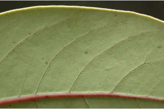
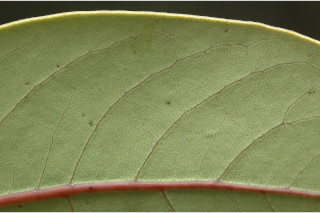
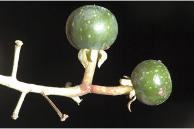
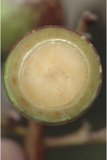
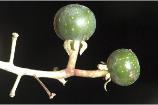
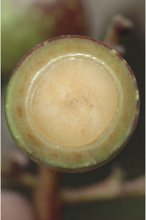

Trees up to 30 m tall.
30 ಮೀ.ವರೆವಿಗೆ ಬೆಳೆಯುವ ಮರಗಳು.
30 മീറ്റര്വരെ ഉയരമുളള മരങ്ങള്.
மரங்கள் 30 மீ. உயரம் வரை வளரக்கூடியது.
Bark light brown, lenticellate; blaze pinkish.
ತೊಗಟೆ ತೆಳು ಕಂದು ಬಣ್ಣದಲ್ಲಿದ್ದು ವಾಯುವಿನಿಮಯ ಬೆಂಡು ರಂಧ್ರ ಸಮೇತವಾಗಿರುತ್ತವೆ;ಕಚ್ಚು ಮಾಡಿದ ನಸುಗೆಂಪು ಬಣ್ಣ ಹೊಂದಿರುತ್ತದೆ.
ശ്വസനരന്ധ്രങ്ങളുളള, ഇളംതവിട്ട് നിറത്തിലുളള പുറംതൊലി; വെട്ട്പാടിന് പിങ്ക് നിറം.
மரத்தின் பட்டை வெளிறிய ப்ரவுன் நிறமானது, லெண்டிசெல் கொண்டது; உள்பட்டை பிங்க் நிறமானது.
Branchlets terete, glabrous.
ಕಿರುಕೊಂಬೆಗಳು ದುಂಡಾಗಿದ್ದು ರೋಮರಹಿತವಾಗಿರುತ್ತವೆ.
അരോമിലമായ, ഉരുണ്ട ഉപശാഖകള്.
சிறிய நுனிக்கிளைகள் குறுக்குவெட்டுத் தோற்றத்தில் வளையமானது, உரோமங்களற்றது.
Leaves simple, alternate, spiral, clustered at twig ends; petiole 1.2-4.5 cm long, canaliculate, glabrous; lamina 7-20.3 x 3-8 cm long, variable in shape, obovate or elliptic to elliptic-oblong, apex rounded or acuminate or acute, base acute to rounded, margin entire, coriaceous, glabrous, glaucous beneath, aromatic when squeeze; midrib canaliculate above; secondary_nerves 8-12 pairs; tertiary_nerves distantly percurrent, slender; higher order nerves closely reticulate.
ಎಲೆಗಳು ಸರಳವಾಗಿದ್ದು ಪರ್ಯಾಯ ಮತ್ತು ಸುತ್ತು ಜೋಡನಾ ವ್ಯವಸ್ಥೆಯಲ್ಲಿ ಇದ್ದು ಕುಡಿಕೊಂಬೆಗಳ ತುದಿಯಲ್ಲಿ ಗುಂಪಾಗಿರುತ್ತವೆ;ತೊಟ್ಟುಗಳು 1.25 - 2 ಸೆಂ.ಮೀ. ಉದ್ದ ಹೊಂದಿರುತ್ತವೆ;ಪತ್ರಗಳು 7- 20.3 X 3-8 ಸೆಂ.ಮೀ.ವರೆಗಿನ ಗಾತ್ರ ಹೊಂದಿದ್ದು ಆಕಾರದಲ್ಲಿ ವೈವಿಧ್ಯತೆ ಹೊಂದಿರುತ್ತವೆ ಮತ್ತು ಬುಗುರಿ ಅಥವಾ ಅಂಡವೃತ್ತದಿಂದ ಅಂಡವೃತ್ತ-ಚತರಸ್ರದ ವರೆಗಿನ ಆಕಾರಗಳನ್ನು ಹೊಂದಿರುತ್ತವೆ; ತುದಿ ದುಂಡಾಗಿ ಅಥವಾ ಕ್ರಮೇಣ ಚೂಪಾಗಿ ಅಥವಾ ಚೂಪಾಗಿರುತ್ತದೆ, ಬುಡ ಚೂಪಾಗಿ ಅಥವಾ ದುಂಡಾಗಿರುತ್ತದೆ; ಅಂಚು ನಯವಾಗಿರುತ್ತದೆ; ಮೇಲ್ಮೈ ತೊಗಲನ್ನೋಲುವ ರೀತಿಯಲ್ಲಿರುತ್ತದೆ;ಪತ್ರಗಳು ರೋಮರಹಿತವಾಗಿದ್ದು ಮಾಸಿದ ಬೂದು ಹಸಿರು ಬಣ್ಣದ ತಳಭಾಗ ಹೊಂದಿರುತ್ತದೆ; ಹಿಂಡಿದಾಗ ಪತ್ರಗಳು ಸುವಾಸನೆ ಬೀರುತ್ತವೆ;ಮಧ್ಯನಾಳ ಪತ್ರದ ಮೇಲ್ಭಾಗದಲ್ಲಿ ಕಾಲುವೆ ಗೆರೆ ಸಮೇತವಿರುತ್ತದೆ; ಎರಡನೇ ದರ್ಜೆಯ ನಾಳಗಳು 8-12 ಜೋಡಿಗಳಿರುತ್ತವೆ;ಮೂರನೇ ದರ್ಜೆಯ ನಾಳಗಳು ಅಂತರ ಹೊಂದಿದ್ದು ಎಲೆ ದಿಂಡಿಗೆ ಅಡ್ಡವಾಗಿ ಕೂಡುತ್ತವೆ ಮತ್ತು ತೆಳುವಾಗಿರುತ್ತವೆ;ಉನ್ನತ ದರ್ಜೆಯ ನಾಳಗಳು ಪತ್ರಗಳು ತೀರಾ ಸನಿಹವಾಗಿದ್ದು ಜಾಲಬಂಧ ನಾಳ ವಿನ್ಯಾಸ ಹೊಂದಿರುತ್ತವೆ.
ലഘുവായ ഇലകള്, ഏകാന്തരക്രമത്തില്, സര്പ്പിളമായി, തണ്ടുകളുടെ അറ്റത്ത് കൂട്ടമായടുക്കിയതാണ്; ചാലുളള, അരോമിലമായ, ഇലഞെട്ടിന് 1.2 സെ.മീ തൊട്ട് 4.5 സെ.മീ വരെ നീളം; പത്രഫലകത്തിന് 7 സെ.മീ തൊട്ട് 20.3 സെ.മീ വരെ നീളവും 3 സെ.മീ തൊട്ട് 8 സെ.മീ വരെ വീതിയും, ആകൃതി, അപഅണ്ഡാകാരമോ ദീര്ഘവൃത്താകാരം തൊട്ട് ദീര്ഘവൃത്തീയ-ആയതാകാരം വരെ പലവിധത്തിലാകാം, പത്രാഗ്രം വൃത്താകാരമോ ദീര്ഘമോ നിശിതമോ ആവാം, പത്രാധാരം നിശിതം തൊട്ട് വൃത്താകാരം വരെയാകാം, അരികുകള് അവിഭജിതമാണ്, ചര്മ്മില പ്രകൃതം, അരോമിലം, കീഴെ നീലരാശി കലര്ന്നതാണ്, ഞെരടിയാല് സുഗന്ധമുളളതാണ്; മുഖ്യസിര മുകളില് ചാലുളളതാണ്; 8 മുതല് 12 വരെ ജോഡി ദ്വിതീയ ഞരമ്പുകള്; വിദൂര പെര്കറന്റ് വിധത്തിലുളള, നേര്ത്ത ത്രിതീയ ഞരമ്പുകള്; മറ്റ് ചെറുഞരമ്പുകള് അടുത്ത ജാലിതമാണ്.
இலைகள் தனித்தவை, மாற்றுஅடுக்கமானவை, சுழல் போன்று அமைந்தவை, தண்டின் நுனியில் கூட்டமாக மற்றும் நெருக்கமாகமைந்தவை; இலைக்காம்பு 1.2-4.5 செ.மீ., நீளமானது, குறுக்குவெட்டுத் தோற்றத்தில் கேனாலிகுலேட், உரோமங்களற்றது; இலை அலகு 7-20.3 X 3-8 செ.மீ., அலகின் வடிவம் வேறுபாடு நிறைந்தது, தலைகீழ் முட்டை அல்லது நீள்வட்டம் முதல் நீள்வட்டம்-நீள்சதுர வடிவானது, அலகின் நுனி கூரியது முதல் வட்டமானது, அல்லது அதிக்கூரியது. அலகின் தளம் கூரியது முதல் வட்டமானது, அலகின் விளிம்பு முழுமையானது, கோரியேசியஸ், உரோமங்களற்றது; அலகின் கீழ்பரப்பு மெழுகு பூசியது போன்றது அல்லது சாம்பல் கலந்த நீல நிறமானது (க்களாக்கஸ்), அலகு கசக்கப்படும் போது நறுமணமிக்கது; மையநரம்பு மேற்பரப்பில் அலகின் பரப்பைவிட பள்ளமானது; இரண்டாம் நிலை நரம்புகள் 8-12 ஜோடிகள்; மூன்றாம் நிலை நரம்புகள் அகன்ற பெர்க்கரண்ட், மெல்லியவை; மற்ற சிறு நரம்புகள் நெருக்கமான வலைப்பின்னல் போன்றது.
Flowers in terminal, spreading panicles.
ಹೂಗಳು ತುದಿಯಲ್ಲಿನ ಹರಡಿಕೊಂಡಿರುವ ಪುನರಾವೃತ್ತಿಯಾಗಿ ಕವಲೊಡೆಯುವ ಮಾದರಿಯಲ್ಲಿರುತ್ತವೆ.
പൂക്കള്, വിടര്ന്ന, ഉച്ഛസ്ഥ പാനിക്കിളുകളിലുണ്ടാകുന്നു.
மலர்கள் தண்டின் நுனியில் அமைந்த அகன்ற பேனிக்கிள்.
Berry, globose to 2 cm across, black when ripe.
ಬೆರ್ರಿ ಗೋಳಾಕಾರದಲ್ಲಿರುತ್ತದೆ ಮತ್ತು ಮಾಗಿದಾಗ ಕಪ್ಪು ಬಣ್ಣ ಹೊಂದಿರುತ್ತದೆ.
കായ, മൂക്കുമ്പോള്, കറുപ്പ് നിറമാകുന്ന, 2 സെ.മീ വരെ കുറുകേയുളള, ഗോളാകാര ബെറിയാണ്.
முழுச்சதைகனி (பெர்ரி), கோளவடிவானது, 2 செ.மீ. குறுக்களவுடையது, கனியும்போது கருப்பு நிறமானது.


 



 


